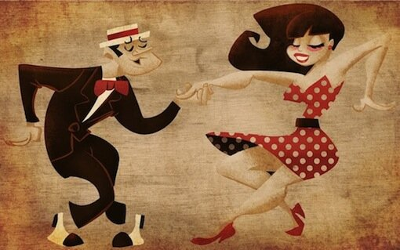

Fun Latin Developments 
17 August 2016
Most competitive dancers progress through the Syllabus within a few years, and do not have enough time to learn every figure, let alone every way of doing every figure. Luckily, you have Ballroom Guide here to help you out and point out some of the more fun ones you should know, that can be used to spice up your routines and impress judges who are used to seeing the same old routines time after time. Some of these may be complex, but the only way to improve your dancing is to practice!
Cha Cha
Time Step Challenge (PreBronze/Silver)
The Time Step is danced with the Man and Lady dance facing each other without hold. On beats 2 and 3, each crosses one foot behind the other and then replaces weight to the original foot, and on 4&1 they dance a Side Chasse. As stated, this figure is danced without hold of any sort, and so the Lady relies on a visual connection with the Man. The Man can dance a few Time Steps while the Lady watches him and follows, and then all of a sudden dance a Spot Turn. The Lady is watching the Man, and obviously isn't led to dance a Spot Turn with him, since there is no hold, so she instead accepts the challenge, and on the following Time Step, she dances a Spot Turn while the Man dances a basic Time Step. At the Silver level, the Man can also dance a Cuban Break, with the Lady accepting the challenge and dancing her own Cuban break over the following measure. Whether using the Spot Turn or the Cuban Break, this variation portrays the flirtatious character of Cha Cha.
to watch a video of this variation.
Guapacha Timing (Silver)
Beginning in Silver, dancers may use a new rhythm for dancing basic steps, called Guapacha Timing (Wah-puh-chuh). Instead of dancing figures stepping on beats 2 3 4 & 1, dancers instead step a 3 4 & 1. This timing exists to create dynamic and surprise in movement. While Samba is exciting in its many different rhythms, all Cha Cha figures use the same basic timing, but Guapacha Timing provides dancers with a means to make those basic figures more interesting. Let's say we are dancing an Open Hip Twist. The first five steps could use normal timing, and the last five steps could use Guapacha Timing. This would be unexpected and eye catching, as once the first five steps have been completed, judges know what to expect next. It also provides sharp dynamic contrast during the second part, however. The Lady pauses before walking out to fan, and then all of a sudden moves very quickly to Fan Position, showing the difference between fast and slow movement. Guapacha timing can be used on any figure.
Natural Top Underarm Turn (Gold)
The Natural Top is a well known figure, and often used competitively from the Bronze level up, but starting in Gold you may use this fun development. Some dancers only dance five steps of the Natural Top, but for this, you will need to dance all fifteen (three measures). During beats 2 and 3 of the second measure, instead of walking straight forward, the Lady will be led by the raising of the Man's arm to dance an Underarm Turn (RL), turning to her left, after which she will continue with the Natural Top as before. This variation is extremely easy, beautiful, and unexpected, so it should definitely be in your repertoire. Note that this can also be danced in Rumba at the Gold level, in exactly the same fashion.
to watch a video of this variation.
Samba
Spot Volta Underarm (PreBronze)
Everybody should know this variation. During a Whisk or a Stationary Samba Walk, the Man may raise his left arm, leading the Lady to dance a Spot Volta underarm. When the Man Whisks to the Left or a Left Foot Samba Walk, the Lady will turn to her Right, and vice versa, but it will always be the Man's left arm that turns her. The Man must make sure to raise her arm slightly before it is time for her to execute the turn, so she has time to react. When the arm is raised, if turning to the right, the Lady will turn 1/4 to the right before taking step 1, and then complete the remaining 3/4 of the turn over the following steps, ending in Closed Hold. If the Man dances a Whisk, his body (and arm) will move to the side as he takes the first step, and likewise, the first step of the Lady's turn will be a forward step in the same direction as the Man has travelled. During a Stationary Samba Walk, however, the Man does not travel on step 1, so the Lady will simply cross in front, like a regular Volta action.
to watch a video of this variation using the Whisk to the Left.
Contra Bota Fogo Hand Change (Gold)
The Contra Bota Fogos are a popular figure, but they are very hard to dance in Closed Hold, which is the basic way of dancing them. This variation is great, because it makes the figure both easier to dance and more impressive. To dance this, achieve R to R hand hold at the end of the preceding figure. On step 3, change to L to L hand hold, and on 6 change back to R to R hand hold. Regain normal hold on the final step, if desired. Dancing the Contra Bota Fogos in this way allows you to dance them the way you want to, instead of being restricted by your partner pulling you in one way or the other through Closed Hold. It also allows you to style your free arm, giving the figure more effect.
to watch a video of this variation.
Foot Change 7 (Gold)
Most Foot Changes are boring - they are only a means of getting from one position to another, but Foot Change 7 is different. This Foot Change, which commences in Right Contra Position and ends in Open Counter Promenade Position, is almost a figure in its own right. The Man dances two Stationary Samba Walks (RLR LRL) while turning 1/4 to the left to face DC, raising his L arm above his head and leading the Lady to dance Voltas around him (RLRLRLR) until she has almost completely circled him and they end ready to dance Criss Cross Bota Fogos, Criss Cross Voltas, a Maypole, or Samba Locks. This is the only figure in Samba where the Lady circles around the Man, and while it is simple enough, only used PreBronze steps, it is always unexpected.
to watch a video of this variation.
Rumba
Solo Cuban Rocks and Spot Turn (PreBronze)
The Cuban Rock is perhaps the most basic of all Rumba figures, with both dancers standing with feet apart, simply shifting weight between feet three times on counts 2 3 41. However, this figure can be made more interesting. Just like the Time Steps in Cha Cha, discussed above, this figure can be danced without hold, and when it is, one partner or the other may choose to dance a Spot Turn while the other dances Cuban Rocks. Unlike the Cha Cha Time Step variation, this isn't so much an instance of the Man challenging the Lady and the Lady accepting the challenge, so either dancer may dance the Spot Turn, and the other does not necessarily have to follow suit. This variation is extremely simple, and very useful for Syllabus dancers of all levels, since it is the only figure in all of Rumba that may be danced entirely without a lead.
Natural Top To Hockey Stick (Silver)
As mentioned above, both Cha Cha and Rumba may use an Underarm Turn during the Natural Top (Gold), but another variation both dances have is to end the Natural Top with a Hockey Stick. For this variation, dance the first 6 steps (two measures) of the Natural Top, and then from there the Man will release his right arm and the couple will continue with the Hockey Stick, starting on step 4. This variation is unexpected, as the Natural Top almost always ends with a Closed Hip Twist. Of course, this variation could be combined with the Underarm Turn during the second measure.
to watch a video of this variation.
Paso Doble
Extended Grand Circle (Bronze)
The Grand Circle is a very popular figure, used even in Gold level routines. One of the hardest things about Paso Doble, though, is making it phrase properly. If you are unfamiliar with Paso Doble phrasing, you can check out this previous article. In short, competitive Paso Doble is always danced to the same song, the Spanish Gypsy Dance (or another song that has been edited to have the exact same beat structure as the Spanish Gypsy Dance). Sometimes, you need a few extra beats to fill in some time, and always using a Sur Place, Basic Movement, or Chasse can get old fast. Thankfully, you can extend the Grand Circle for two beats, with the Lady taking two more steps around the Man before closing to him. This variation is very specific, in that it only helps in the one instance described herein, but it does an amazing job, so if you find yourself building a Paso Doble routine and need a two extra beats, use this figure.
to watch a video of this variation.
Promenade to Chasse Cape (Gold)
Paso Doble was nicely organized so that the Promenade, the Sixteen, the Twist Turn, and many other figures all commence with the same first five steps. Relatively unused, however, is going into step 2 of the Chasse Cape after those first five steps. The Chasse Cape is one of the most characteristic figures in Paso Doble: virtually every professional has a variation of it in his Paso routine, and every Gold dancer should be sure to include it as well. The basic way of starting it is from Closed Position, but it often also follows the Twists. Using the first five steps of the Promenade to enter the Chasse Cape, however, is one of the easiest ways to do it.
Continuous Spins in Counter Promenade Position (Gold)
If you are a Lady who likes to spin a lot, this is the figure for you. During the basic form of the Travelling Spins in Counter Promenade Position, the Lady steps LF to the side in Open CPP, then dances a Spiral action over that foot, following with a RF forward walk in Open CPP. She then repeats this once, for a total of four walks and two spirals over four beats. In this variation, the Lady may instead add two extra steps and an extra spin into the same figure, without the Man having to change his steps. Instead of stepping 5 (turn) 6 7 (turn) 8, the Lady will dance 5 (turn) & 6 (turn) 7 & (turn) 8. This can be led through a change in the timing of the circling of the Man's hand overhead, but the lead is so subtle only the most sensitive Ladies will notice it. Alternatively, the Lady may choose to initiate this spin herself without being led.
to watch a video of this variation.
Jive
Underarm American Spin (Silver)
The American Spin is one of the best figures to be danced when in Right to Right Hand Hold, but it can also be danced with Left to Right Hand Hold. In this variation, the Man will raise the left hand and the Lady will turn under it, just as if she were dancing a normal American Spin. One of the most important aspects of your routine should be to make sure it is always exciting, and nobody expects an American Spin when you do not have Right to Right Hand Hold.
to watch a video of this variation.
Extra Spin (Silver)
In many figures, such as the Change of Place Right to Left or the Spanish Arms,, where the Lady turns to her right under arm, the Lady may dance an extra spin, completing an additional whole turn on her right foot before continuing with her turning chasse. Most professional Jive Routines consist largely of a lot of spins for the Lady, and this is an excellent opportunity to show off. To lead this, the Man must increase the tone in his arm and lead the turn sooner, in order to give the Lady more power and time to complete the Spin. Care should be taken not to be forceful with the Lady, however, for if she is not ready or the lead is too strong, she may suffer a fall or an injured shoulder. Always lead with strength, yet gentleness. Alternatively, the Lady may choose to initiate this spin herself without being led.
to watch a video of this variation using the Change of Place Right to Left.
Overturn to Runaway (Gold)
Whereas an extra spin can be added when the Lady is turning to her right, when she turns to the Left underarm, she has the opportunity to overturn to Runaway Position. Taking the Change of Places from Left to Right, for example, after completing her turn, the Lady may turn an additional 1/2 to the left over her RF as a Spiral Action, and dance her next Chasse not backward, but forward, turning back to face the Man before her Rock Step. At the Gold level, the Chasse may be followed by a Simple Spin. The Man leads this by lowering the connection and making a subtle circular movement, sometimes turning the Lady's palm over to the right so her palm faces upward. In this position, the Man and Lady may dance a Forward Chasse, Forward Locks, or (Gold) Forward Runs. The most common figure that uses this overturned action is the Fallaway Throwaway, where the overturn is allowable at Silver.
to watch a video of this variation using the Change of Places from Left to Right.